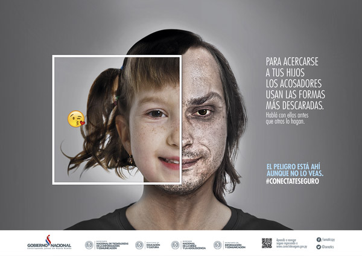

DEFINICIÓN Y CONCEPTOS
Es indudable que el acceso de la información a través de internet ha permitido una nueva forma de comunicación global que facilita el acceso al conocimiento. Hay que buscar espacios positivos para que el uso de las TIC sea verdaderamente una oportunidad. La sociedad tiene que ser capaz de hacer de esto una experiencia por y para el desarrollo de una adecuada alfabetización.
El uso del móvil, internet y las redes sociales pueden aportar aspectos positivos, pero no se puede obviar, y forma parte del proceso educativo, que pueden existir una serie de riesgos. En el anterior tema hablamos de las posibles tecnoadicciones, ahora vamos a profundizar sobre tres situaciones extremas que se pueden producir en la red: Ciberbullying, sexting y grooming.
a- Ciberbullying
Es el acoso entre menores que se produce a través de medios tecnológicos. Por uso y difusión de información lesiva o difamatoria en formato electrónico a través de los medios de relación como el correo electrónico, la mensajería instantánea, las redes sociales, la mensajería de texto a través de dispositivos móviles o la publicación de vídeos o fotografías en plataformas electrónicas de difusión de contenidos.
Para que se defina como ciberacoso tiene que ser una agresión psicológica, sostenida y repetida en el tiempo, perpetrada por uno o varios individuos contra otros, utilizando para ellos las nuevas tecnologías. Si la agresión fuera puntual, evidentemente habría que buscar soluciones, pero no se debería considerar como acoso.
Conductas que provocan ciberbullying:
- Amenazar
- Insultar
- Subir una foto sin permiso o trucada
- Crear websites o grupos difamatorios
- Robar contraseñas
- Suplantar la identidad
- Seguir enviando correos o mensajes a alguien que no quiere recibirlos
- Acechar y acosar a través de las redes
- Excluir intencionadamente a alguien de un grupo
- Envío de rumores o cotilleos
- Compartir información secreta
- Grabar y compartir vídeos de peleas o tipo sexual.
¿Por qué es tan peligroso?
- No siempre hay intención de causar tanto daño, a veces la conducta desencadenante parece inocente.
- Su efecto es duradero, se mantiene a través de las redes durante mucho tiempo.
- Se extiende por las redes sociales sin control y la audiencia se expande.
- Favorecen el anonimato
- No hay enfrentamiento personal, a la cara
- Quien lo causa se siente impune.
- No se produce un contagio físico de las emociones ya que las claves socioemocionales propias de la empatía (llanto, expresión de la cara,..) no son visibles para el agresor.
¿Qué consecuencias tiene?
- En las víctimas provoca serios daños emocionales que lesionan la autoestima, pudiendo ser la causa de enfermedades como la depresión y en casos extremos el suicidio
- Estrés postraumático
- Delirio de persecución
- Insomnio
- Cambios de personalidad que puede a llegar a destruir o anular a la persona del menor
- Sensación de inferioridad respecto al resto del entorno
- Nerviosismo e hipersensibilidad a toda injusticia
- Incapacidad para disfrutar y estar seguro de lo que se es y se hace
- Miedo general
Para los agresores las consecuencias pueden ser penales…
La edad penal en España se establece en los 18 años pero a partir de los 14 se pueden exigir responsabilidades, aplicando un sistema jurídico particular.
Los menores de 14 años también responden de los delitos cometidos ante la fiscalía de menores.
Son los padres o tutores legales los que asumen la responsabilidad civil.
El ciberacoso no está tipificado como tal en el Código penal al ser un fenómeno moderno.
La mayor parte de los delitos cometidos a través de las tecnologías de la información sí lo están. Por ejemplo, el artículo 143 del Código Penal castiga con pena de prisión de cuatro a ocho años al que induzca al suicidio de otro. No importa el mecanismo utilizado, o si se induce a éste en persona, verbalmente, por chat, por SMS.
Según el Código Penal español, los delitos informáticos que podrían encajar con esta figura delictiva, si bien no exactamente son:
- Delitos contra la intimidad: El descubrimiento y revelación de secretos o la vulneración de la intimidad de las personas.
- Amenazas.
- La alteración, destrucción o los daños en datos, programas o documentos electrónicos ajenos. En este tipo delictivo se incluirían conductas como, por ejemplo, los actos de sabotaje contra soportes electrónicos, o la introducción de virus electrónicos para causar daños.
- La pornografía infantil, que se ha visto favorecida por el anonimato que proporciona la red.
- Delitos contra el honor: Las injurias y las calumnias. Generalmente las que se cometen en redes sociales, foros o por correo electrónico.
- Coacciones
También en el artículo 173.1, pudiera ser aplicado para referirnos a esta figura: “El que infligiera a otra persona un trato degradante, menoscabando gravemente su integridad moral, será castigado con la pena de prisión de seis meses a dos años”.
Otros casos, en el 197.1 del CP: para contemplar aquellos casos, en el que alguien pueda descubrir los secretos o vulnerar la intimidad de otro.
Perfil del acosador:
El perfil genérico del acosador es el de una persona fría, con poco o ningún respeto por los demás y que disfruta persiguiendo a una persona determinada, ya tenga relación directa con ella o sea una completa desconocida.
El acosador disfruta y muestra su poder persiguiendo y dañando psicológicamente a esa persona.
Según Rodríguez López en su libro El Acoso moral define a estas personas como " resentidas, frustradas, envidiosas, celosas o egoístas, necesitadas de admiración, reconocimiento y protagonismo y lo que quieren es figurar, ascender o aparentar, aun cuando simplemente deseen hacer daño o anular a otra persona".
En el caso del ciberacosador se siente en una posición de poder desde el anonimato que se percibe mientras se está “en línea”. Durante todo ese tiempo va recopilando toda la información posible acerca de su víctima, fundamentalmente en aquellos aspectos que forman parte de su vida privada y de sus movimientos en la Red.
Además es cobarde, ya que se oculta tras el aparente anonimato y falsificación de identidad que proporciona internet.
Este vídeo te invita a reflexionar acerca del Cyberbullying. Si no eres capaz de decirlo en persona, ¿por qué hacerlo en intenet?:
La víctima: La víctima se siente indefensa, en muchos casos culpable. Entiende este alumno que ha hecho algo mal, se lo merece puesto que nadie le apoya. Su aislamiento psíquico, su falta de comunicación, el desconocimiento de éstos sobre los hechos, la falta de solidaridad entre compañeros, socavan la fuerza de la víctima. En principio, no se puede afirmar que exista un perfil psicológico que predisponga a una persona a ser víctima de acoso u hostigamiento. Esto quiere decir que cualquier persona en cualquier momento puede ser víctima.
Nada tiene que ver la imagen que pretende proyectar el acosador de su víctima con la realidad. Mientras que esa imagen pretende reflejar una persona poco inteligente y holgazana, los acosados a menudo suelen ser inteligentes y trabajadores.
En cualquier caso el acosador no actúa nunca solo, sino que más bien es el acosado quien lo está. Es la pasividad de los demás la que refuerza el acoso.
El espectador:
En los nuevos protocolos y programas de convivencia se está insistiendo en una figura que hasta ahora no estaba siendo considerada, y esta es la del testigo.
En los centros educativos los testigos son compañeros que se alinean con el acosador para no tener problemas, y a la vez conviven dentro del anonimato que les hace creer ser más impunes.
b- Sexting:
Se origina en un menor que envía imágenes o vídeos sexuales propios. Para ello utiliza el móvil y a través de redes sociales como Whatsapp, Line, SnapChat, Instagram, Telegram… es delito porque se considera como pornografía infantil.
Esta práctica está realmente extendida entre los jóvenes, y aunque el eslogan es no lo produzcas, no lo transmitas y no lo provoques, los niños y adolescentes lo realizan sin ser conscientes sus consecuencias.
De esta manera el sexting se convierte en una práctica de riesgo. Los problemas más habituales son:
- Daños al honor y a la propia imagen
- Pérdida de intimidad y privacidad
- Sextorsión: personas que te chantajean por esas imágenes
- Ciberbullying: personas que te acosan, insultan y molestan
- Implicación en delitos de pornografía infantil si eres menor de edad
A continuación damos diez razones para no sextear:
http://www.pensarantesdesextear.mx/prevencion-10-razones-no-sexting/
Muy a menudo el alumnado no acepta ese riesgo, de hecho es muy común entre los adolescentes hacer sexting. Ahora te proponemos un decálogo para sextear de forma segura:
http://www.sextingseguro.com/consejos-sextear-nudes-con-menos-riesgos/
c- Grooming.
Es acoso sexual que se produce en los espacios virtuales. Es acoso ejercido por un adulto y se refiere a acciones realizadas deliberadamente para establecer una relación y un control emocional sobre un niño o niña con el fin de preparar el terreno para el abuso sexual del menor. Se podría decir que son situaciones de acoso con un contenido sexual explícito o implícito.
Fases:
- Contacto y acercamiento del ciberacosador que finge ser atractivo para el menor.
- Consigue en el transcurso de la relación que el menor le envíe alguna fotografía comprometida.
- Si el menor no accede a sus pretensiones sexuales, le chantajea con las fotos.
- Mediante amenazas el ciberacosador puede acceder a todos sus caprichos sexuales, llegando en algún caso, incluso a contactar físicamente con el menor.
Consejos para los alumnos:
- Mantener los datos en privado.
- No molestar o insulta a otros con dispositivos.
- No responder a mensajes o llamadas de desconocidos.
- Si es algo importante hablar con un adulto de confianza.
- La opción GPS se debe utilizar con precaución.
- Cuidado con la webcam, tapa siempre la cámara.
- Tener precaución al conectarse a redes WIFI o Bluetooth
Encuestas sobre comportamiento de los niños en las redes sociales revelan que a la vez que se hacen mayores aumenta el contacto con desconocidos. El salto de las 12 a los 14 años puede quintuplicar ese contacto que estaría en zona de riesgo.
Observa esta imagen del Estado de México:


Convivencia Segura en la red por Antonio Martínez Ramos y Jesús Prieto González bajo licencia Creative Commons Reconocimiento-NoComercial-CompartirIgual 4.0 Internacional License.